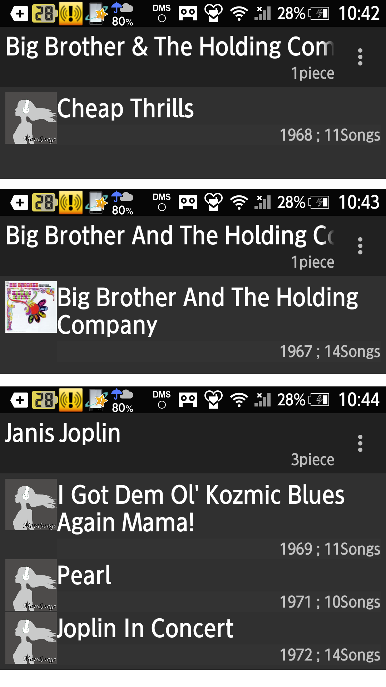
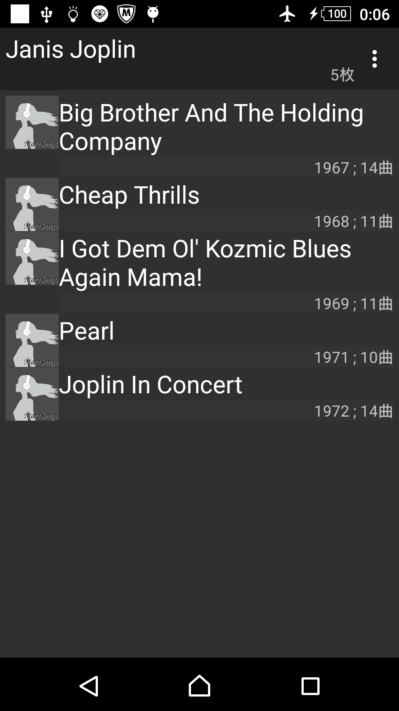
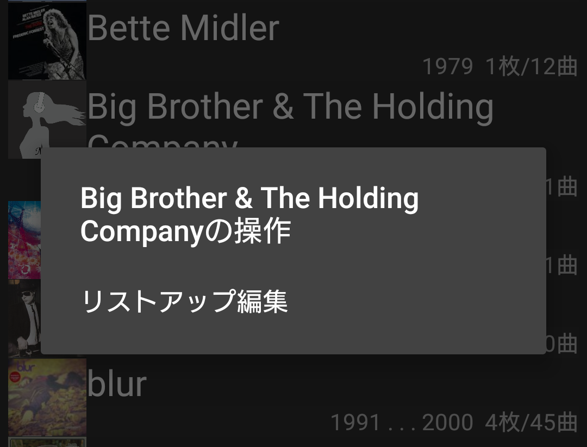
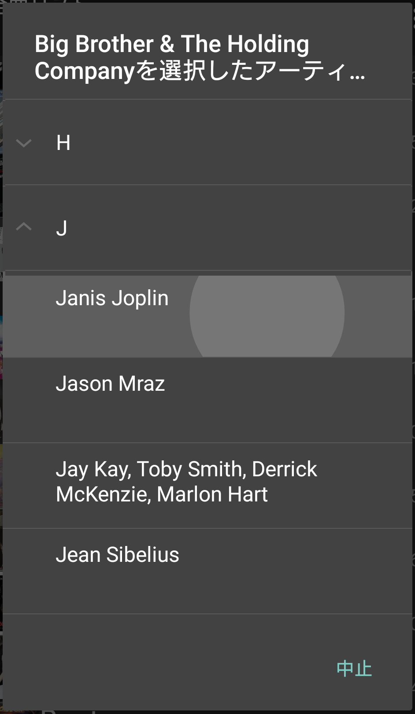
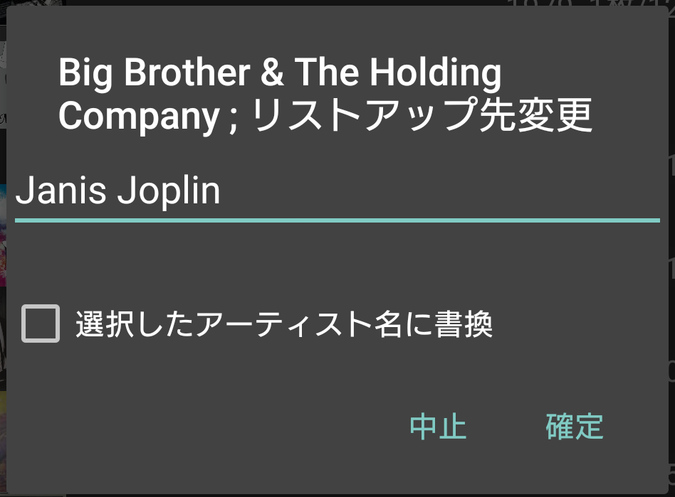
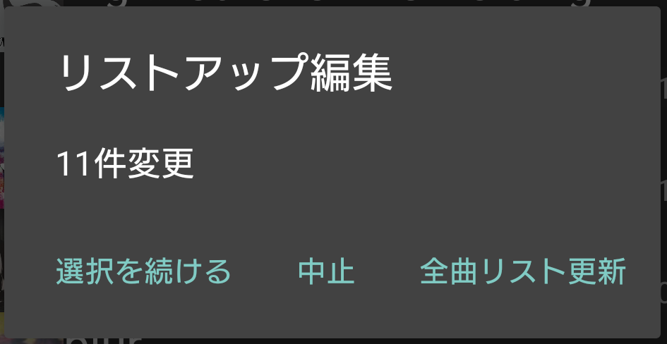

|
当たり前に使える音楽プレイヤー
MaraSongs |
リストアップ編集
クレジットされているアーティスト名以外でリストアップしたい時にご利用ください
機能概要 |
全曲リストを作成/更新した後に発生する以下の様なケースで使う機能です。
|


操作手順は |
|

|

|

|

全曲リストの更新が終わった直後、数秒はデータに結びついていない状態のリストが表示されているので、触るとアプリケーションがクラッシュします。
その書き換えの間を示すダイアログ（アーティストリストの読み込みプログレス）が表示されますが一瞬なので見落としてしまいそうです。
書き換えが終わったら２，３秒置いてから操作してください。